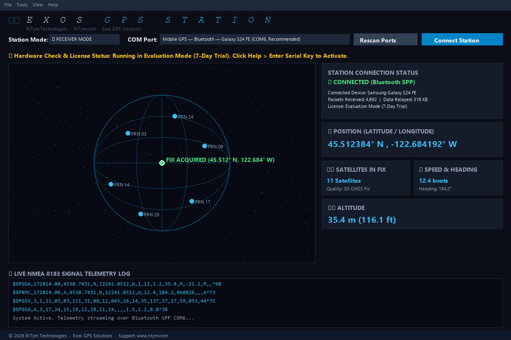

We build straightforward MIDI software, dedicated desktop instruments, and offline positioning tools. PulseStage 1.1.0 features a fully self-contained native Qt WebEngine window with zero external browser dependencies and native IPC.

An approachable Windows MIDI control station, diagnostic packet monitor, master 24-PPQN clock, and driver-free practice lab designed for touring keyboardists, guitarists, and studio engineers.
Watch the complete 5-minute unhurried technical walkthrough explaining practical stage challenges, program indexing conventions (0–127 vs 1–128), master tempo clock, and receipt-verified diagnostic testing.
Send Program Changes with selectable 0–127 or 1–128 indexing without wire corruption. Full Bank Select (CC0 MSB / CC32 LSB) and tactile CC rotary knobs with explicit transmission.
Real-time timing engine with Start, Continue, and Stop transport commands. Tap tempo capability, fractional BPM adjustments, and live arrival interval tracking to diagnose host timing jitter.
Inspect every incoming and outgoing MIDI byte with microsecond timestamps, port directionality tags, live CC activity curves, and clock interval graphs. Exports cleanly to CSV, JSON, and text.
Built-in velocity keybed and reference receiving pedal with live 7-segment displays. Practice and verify complex presets out of the box with zero third-party virtual cable drivers needed.
Execute multi-step preset and parameter chains with deterministic millisecond pauses to give vintage synthesizers and digital modelers time to process patch changes before receiving CC updates.
Four automated checks (Note On/Off, Preset Change, Parameter CC, Clock sync) that only PASS when confirmed receipt bytes arrive at the receiving port, eliminating false positives.
Lightweight, independent GPS instruments and offline positioning tools for outdoor enthusiasts and field travel.
We are designing a pocket-sized GPS instrument and companion utilities for hikers, field travelers, and overlanders who want honest coordinate fixes and zero-cloud tracking. No subscriptions, no ads, and no background telemetry spying.

The name ritym comes from rhythm — the steady, dependable pulse that keeps systems aligned.
Whether it's the 24 pulses per quarter note locking together synthesizers on a festival stage, or a nanosecond satellite timestamp pinpointing a coordinate on a topo map, precision timing is the foundation of every honest signal.
The Blue Square Dot: In our logo, the electric blue pixel above the "i" represents the fundamental quantum unit of signal — the discrete clock tick, the individual MIDI byte, the clean coordinate fix.
Fully bundled standalone setup executable. Installs clean binaries, creates Start menu and desktop shortcuts, and safely preserves your presets in AppData.
Download Setup Executable (126 MB)| Target Platform | Windows 10 / 11 (64-bit) |
| MIDI Driver Subsystem | Native WinMM (Windows Multimedia API) |
| Timing Engine | 24-PPQN Real-Time Master Clock |
| Practice Lab Transport | Internal Dual-Pipe (Driver-Free) |
| User Presets | %APPDATA%\PulseStage (Preserved) |
| License | MIT Open Software License |
| External Dependencies | None required (Self-contained) |